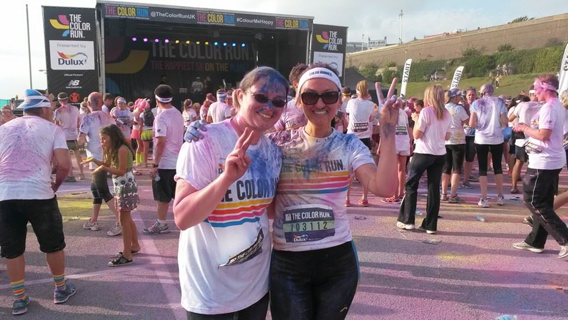

Prof. Dr. Tamara Rathcke
Professor of English Linguistics,
University of Konstanz


I love travels of all kinds and spent my sabbatical July 2019 – March 2020 travelling to Italy, Canada, Australia, New Zealand and Japan. I was staying at NINJAL, Tokyo when the COVID-19 pandemic hit the world, and had an adventurous trip back to Europe in March 2020 among flight cancellations and introduced lockdowns, followed by an even more adventurous international house move from Canterbury, UK to Konstanz, Germany for the start of my new post as Professor of English Linguistics at the University of Konstanz in April 2020.
I enjoy learning new things as it fully anchors my busy mind in the present moment. I have been learning different dances – Scottish Country Dancing, American Contra, French and Breton Country Dances and lately Jive, Lindy Hop and Balboa. I am passionate about yoga and hiking, run only unwillingly but swim whenever I get a chance.
Being trilingual in Russian, German and English, I understand and speak a little bit of Ukrainian but have miserably failed at French and am looking forward to an opportunity of trying it with Spanish. I have taken classes in Polish, Italian, Latin and Kurdish. I don’t speak any of these languages, though I once deeply impressed my Kurdish MA-student by remembering how to say [roʒ bʌʃ] which means hello in Kurdish.